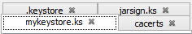

KeyStore Tab Style Configuration
To configure the KeyStore tab style:
- From the View menu, choose the Tab Style sub-menu.
- If the Wrap menu item is selected then excess KeyStore tabs will be wrapped.
- If the Scroll menu item is selected then excess KeyStore tabs will be scrolled.
Wrapped Tabs:

Scrolled Tabs:

Copyright 2004 - 2013 Wayne Grant, 2013 - 2018 Kai Kramer